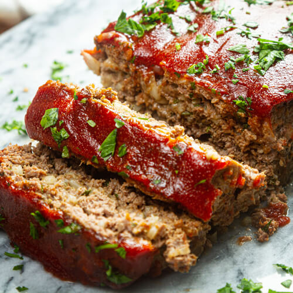

Home
Meatloaf Recipe

Description
Easy way to make meatloaf for the holiday season. Done in an hour and a half. Six servings.
Ingredients
- 1 tablespoon good olive oil
- 3 cups chopped yellow onions (3 onions)
- 1 teaspoon chopped fresh thyme leaves
- 2 teaspoons kosher salt
- 1 teaspoon freshly ground black pepper
- 3 tablespoons Worcestershire sauce
- 1/3 cup canned chicken stock or broth
- 1 tablespoon tomato paste
- 2 1/2 pounds ground chuck (81 percent lean)
- 1/2 cup plain dry bread crumbs (recommended: Progresso)
- 2 extra-large eggs, beaten
- 1/2 cup ketchup (recommended: Heinz)
Steps
- Preheat the oven to 325 degrees F.
- Heat the olive oil in a medium saute pan. Add the onions, thyme, salt, and pepper and cook over medium-low heat, stirring occasionally, for 8 to 10 minutes, until the onions are translucent but not brown. Off the heat, add the Worcestershire sauce, chicken stock, and tomato paste. Allow to cool slightly.
- In a large bowl, combine the ground chuck, onion mixture, bread crumbs, and eggs, and mix lightly with a fork. Don't mash or the meat loaf will be dense. Shape the mixture into a rectangular loaf on a sheet pan covered with parchment paper. Spread the ketchup evenly on top. Bake for 1 to 1 1/4 hours, until the internal temperature is 160 degrees F and the meat loaf is cooked through. (A pan of hot water in the oven, under the meat loaf, will keep the top from cracking.) Serve hot.